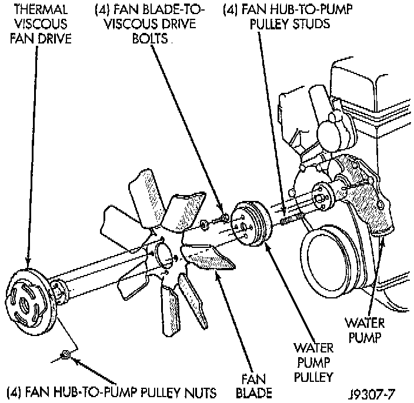
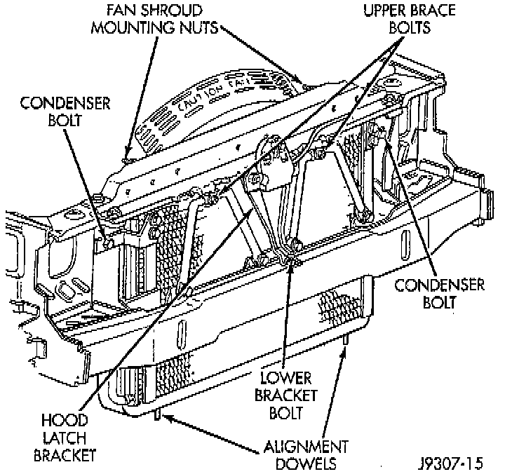

Fan Clutch: Service and Repair
REMOVAL
1. Remove the four fan hub-to-water pump pulley mounting nuts. Carefully remove the fan assembly from the water pump pulley and position to center of fan shroud. Fan belt removal is not necessary as the water pump studs will hold the pump pulley in position. Do not remove fan assembly from vehicle at this time.

2. Remove the two fan shroud-to-upper radiator crossmember mounting nuts.
3. Remove fan, viscous fan drive and fan shroud as an assembly from the vehicle.
4. Remove the four fan blade-to-viscous fan drive mounting bolts. Remove viscous fan drive from fan blades.
5. After removing fan blade/fan drive assembly do not place the thermal viscous fan drive in the horizontal position. If stored horizontally, the silicone fluid in the viscous fan drive could drain into the bearing assembly and contaminate the lubricant.
INSTALLATION
1. Assemble fan blades to viscous fan drive. Tighten mounting bolts to 24 Nm (18 ft. lbs.) torque.
2. Position fan, viscous fan drive and fan shroud to the engine as one assembly.
3. Position fan shroud to radiator. Be sure the alignment tabs at the lower part of shroud are placed into the slots near lower part of radiator. Be sure the upper-and lower portions of the fan shroud are firmly connected. All air must flow through the radiator.
4. Position mounting flange of fan/viscous fan drive assembly onto water pump pulley. Install four nuts and tighten to 24 Nm (18 ft. lbs.) torque.
5. Install two fan shroud mounting nuts.
NOTE: Be sure of at least 25 mm (1.0 inches) between tips of fan blades and fan shroud.